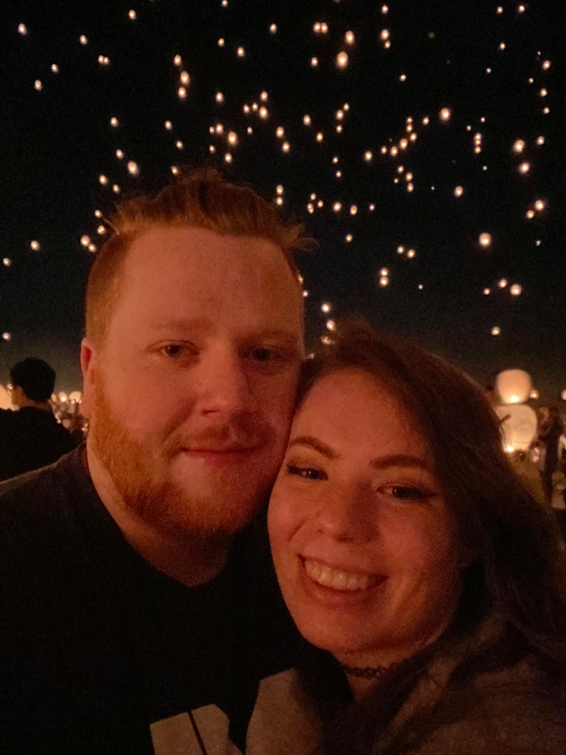

About Me

My name is Corey. I'm 23 years old, almost 24. I just recently got into coding and so far, I'm loving it. It is rather tedious and time consuming, but it's still pretty fun. I was born in Murray, UT. I love video games and building computers, mostly. When I'm done with this Bootcamp, I want to move into the Tech Field. Just see where it takes me. Thanks for stopping by!